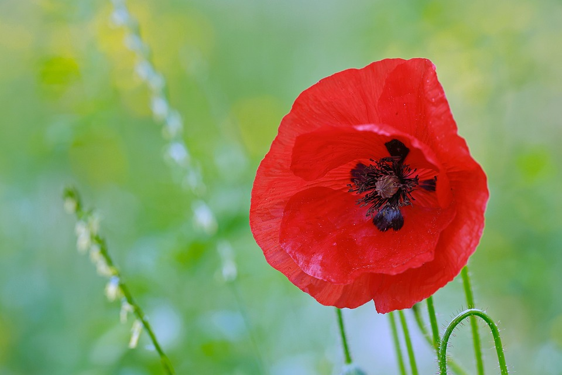

 Flowers of species (not cultivars) have 4 or 6 petals, many stamens forming a conspicuous whorl in the center of the flower and an ovary of from 2 to many fused carpels. The petals are showy, may be of almost any colour and some have markings. The petals are crumpled in the bud and as blooming finishes, the petals often lie flat before falling away.